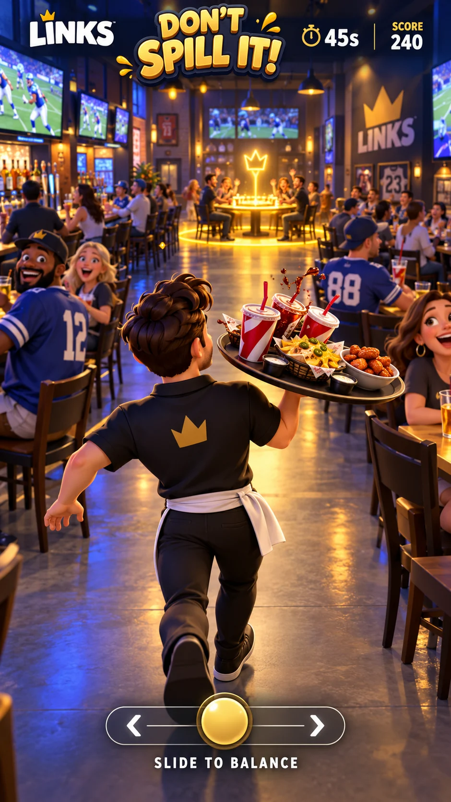
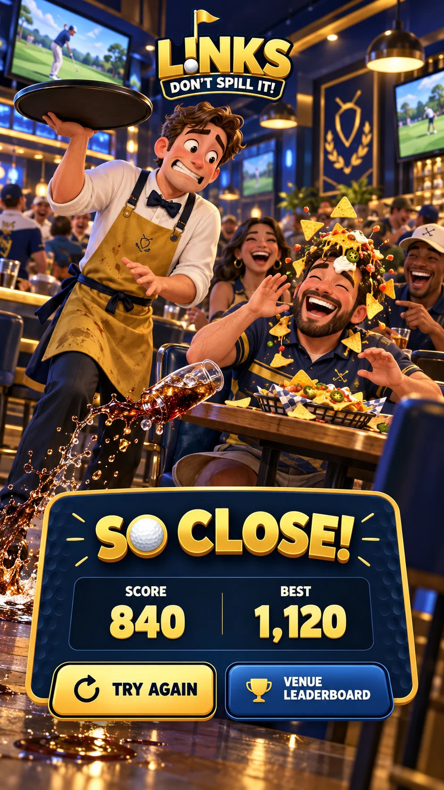

LINKS PRESENTSCHECK,
CHECK,
PLEASE!
Drink service. Disaster potential.
FREE · 60 SECONDS · ONE VERY WOBBLY TRAY
Your shift starts now.
Drag to steer. Move gently to keep your tray steady. Dodge chairs, dancing fans and people backing into the aisle.
- Deliver every 12 seconds to refill your tray and score.
- Carry three drinks. Spill them all and your shift ends. Catch a wobble for a bonus.
- Everyone gets the same daily course. No payment needed.
Getting your venue ready…
Loading daily scores…
Sign in to save a leaderboard scoreTIME60
CHECK,
PLEASE!
PLEASE!
SCORE0
STEADY
SPILL
DAILY SHIFT3 / 3 drinks left
Dodge the crowd. Easy on the tray.

SHIFT COMPLETE
Check, please!
SCORE0
DEVICE BEST0
BRAGGING RIGHTS
Today’s best servers
Loading…
Best server-checked daily round per account. Practice stays on this device. Signed-in scores use your public display name.